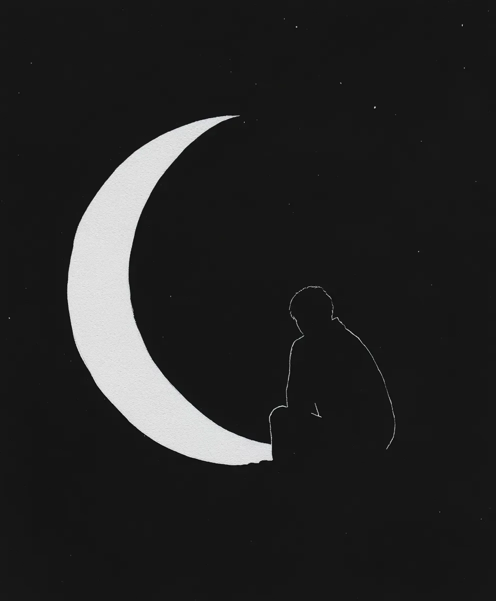

초승달이 어둠 속에서 희미하게 빛나던 그 밤, 나는 다시 옥상에 올라왔다.
That night, when the crescent moon glowed faintly in the darkness, I climbed to the rooftop again.
별들이 흩어진 하늘 아래에서 나는 언제나 그 사람을 떠올린다.
Beneath the sky scattered with stars, I always think of that person.
우리가 마지막으로 이 자리에 서 있었던 게 벌써 삼 년 전이다.
It’s already been three years since we last stood in this spot together.
그때 그녀가 손가락으로 달을 가리키며 한 말이 아직도 귓가에 맴돈다.
The words she spoke while pointing at the moon still linger in my ears.
“저 달처럼 우리도 멀어지더라도 같은 하늘 아래 있잖아.”
“Even if we drift apart like that moon, we’re still under the same sky.”
하지만 하늘은 넓고, 침묵은 깊으며, 그리움은 끝이 없다.
But the sky is vast, the silence is deep, and my longing knows no end.
차가운 바람이 뺨을 스칠 때마다 그녀의 손길이 떠오른다.
Every time the cold wind brushes my cheek, I’m reminded of her touch.
달은 매달 차오르고 이지러지지만, 나의 기다림만은 변함이 없다.
The moon waxes and wanes each month, but my waiting remains unchanged.